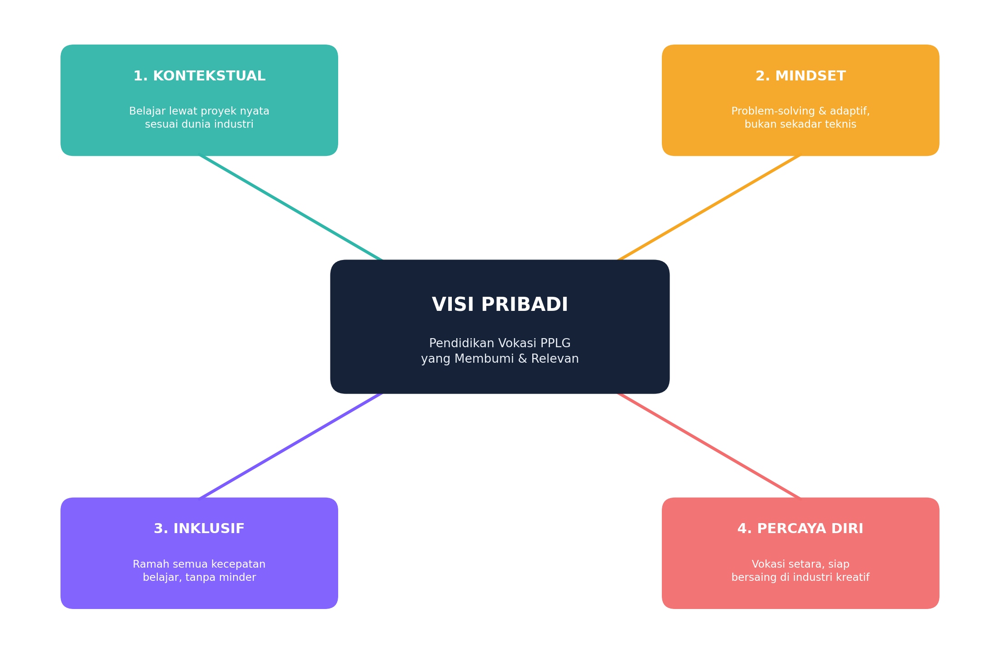
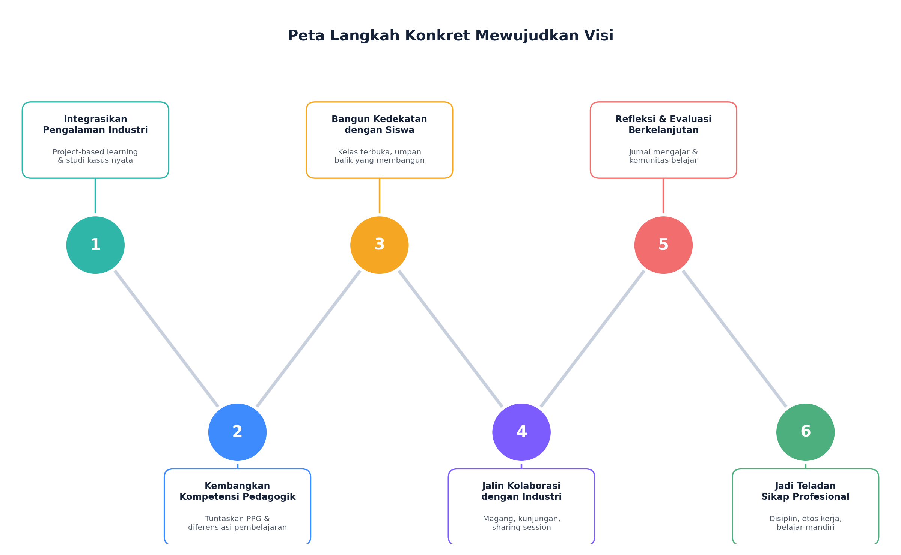
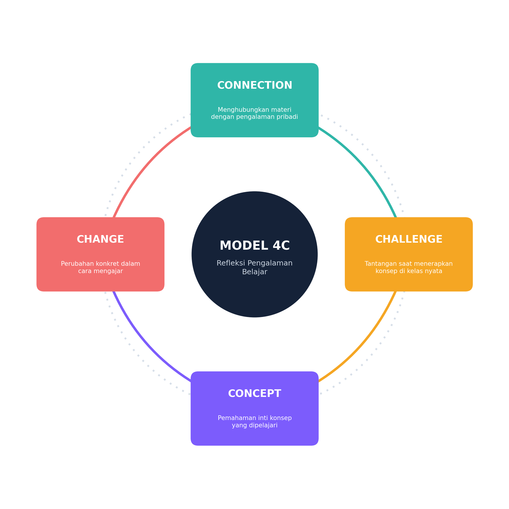
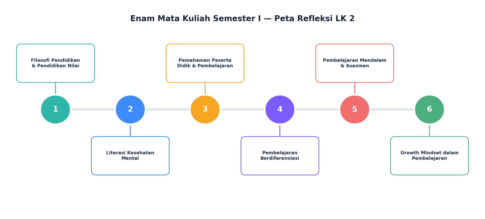
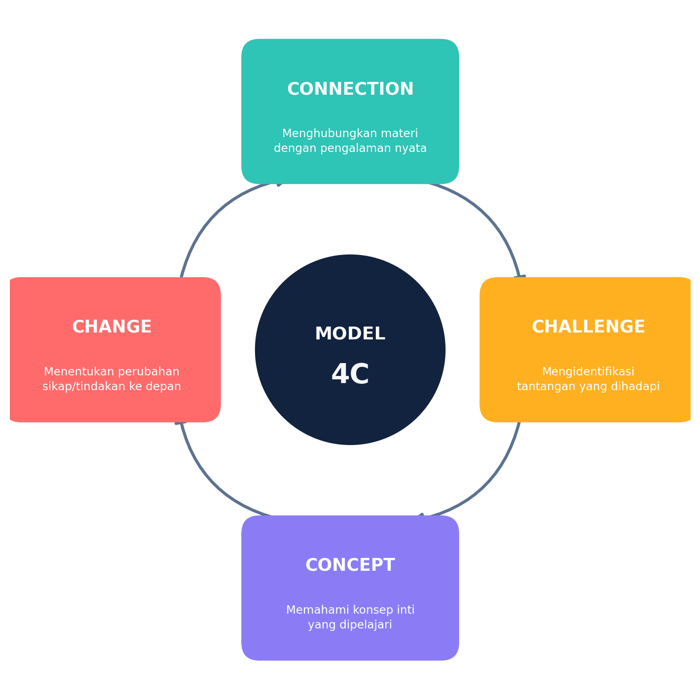
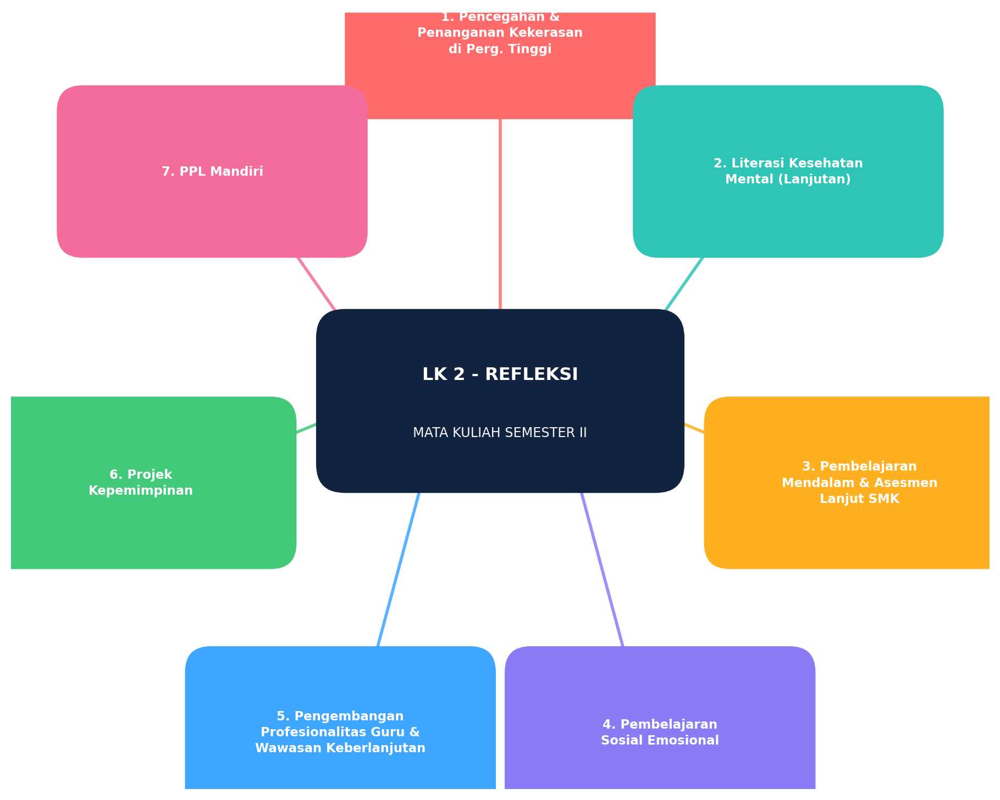
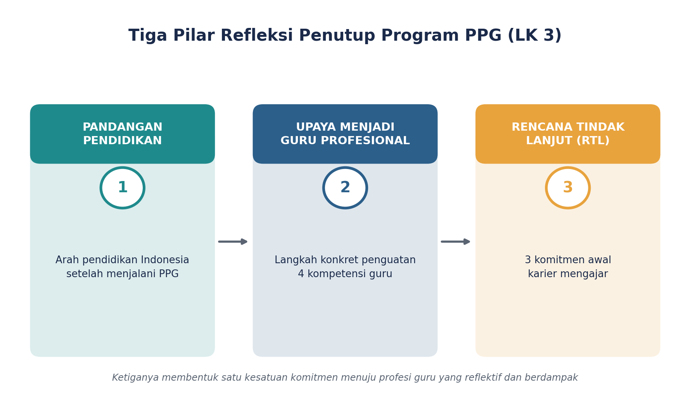
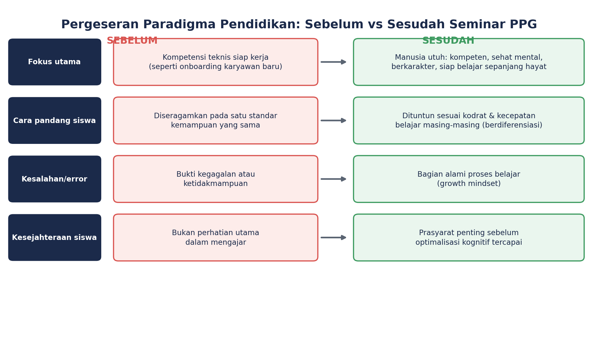
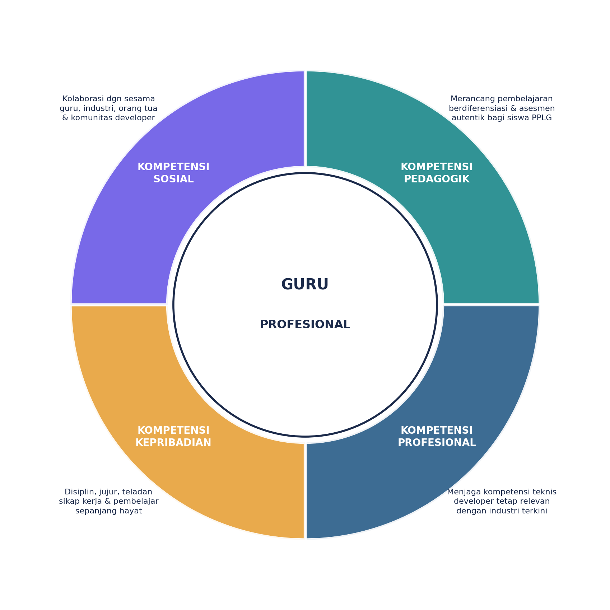
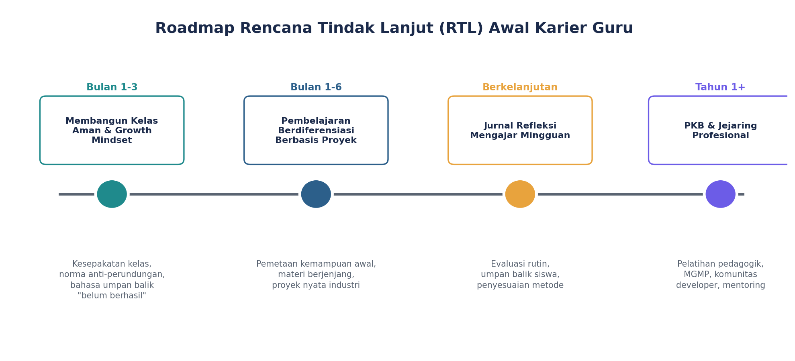

Eks-Frontend & Mobile Developer yang kini menempuh PPG Prajabatan pada bidang
keahlian Rekayasa Perangkat Lunak — Pengembangan Perangkat Lunak dan Gim (PPLG).
Empat lembar kerja berikut merangkum visi sebagai calon guru, refleksi
atas tiga belas mata kuliah Semester I & II, hingga penutup berupa pandangan
akhir dan rencana tindak lanjut — disusun seperti menyusun kode: bertahap, reflektif,
dan terus diperbaiki lewat iterasi.
Visi Pribadi untuk Pendidikan Indonesia, Visi sebagai Calon Guru, dan Langkah Konkret Mewujudkannya
/** 1.2 Unggah Hasil Identifikasi Diri (LK 1) */
Mengenal visi pribadi menjadi langkah penting sebelum memulai pengabdian di dunia
pendidikan. Melalui Lembar Kerja 1 ini, Bapak/Ibu diajak untuk merefleksikan peran dan
cita-cita dalam memajukan pendidikan di Indonesia. Lembar kerja ini memuat: visi pribadi
untuk pendidikan di Indonesia, visi pribadi sebagai calon guru, serta langkah-langkah
konkret yang akan dilakukan untuk mencapai visi tersebut.
Nama MahasiswaHusin Nanda Perwira
NIM2531084
Latar BelakangEks-Frontend & Mobile Developer, kini menempuh PPG Prajabatan
Bidang Keahlian PPGRekayasa Perangkat Lunak — PPLG
Jawaban pada LK 1 ini disusun ke dalam tiga bagian besar yang saling berkaitan:
(A) visi pribadi terhadap pendidikan Indonesia, (B) visi
pribadi sebagai calon guru, serta (C) langkah-langkah konkret yang akan
ditempuh untuk mewujudkan kedua visi tersebut.
A
Visi Pribadi untuk Pendidikan di Indonesia
Visi pribadi saya adalah mewujudkan pendidikan vokasi di Indonesia — khususnya pada
bidang Pengembangan Perangkat Lunak dan Gim (PPLG) — yang benar-benar menjembatani
kesenjangan antara apa yang diajarkan di ruang kelas dengan apa yang dibutuhkan oleh
industri teknologi yang bergerak sangat cepat.
Visi ini lahir dari pengalaman nyata selama bertahun-tahun bekerja sebagai frontend dan
mobile developer — melihat langsung betapa cepatnya perubahan teknologi, mulai dari
metodologi agile, budaya code review, penggunaan version control, hingga kolaborasi
lintas divisi. Di sisi lain, banyak lulusan SMK maupun perguruan tinggi yang memahami
teori pemrograman dengan baik, tetapi kesulitan menghadapi proyek nyata, alur kerja tim,
maupun standar kualitas industri. Kesenjangan itulah yang mendorong saya terjun ke dunia
pendidikan dan berupaya menutupnya dari dalam.
Empat Pilar Visi Pendidikan
01
Kontekstual & Relevan
Belajar dari proyek nyata, bukan hafalan konsep
Siswa membangun aplikasi/gim yang mensimulasikan proyek dunia kerja
02
Membentuk Mindset
Problem-solving & adaptabilitas, bukan sekadar skill teknis
Siswa dilatih berpikir logis dan mandiri menghadapi masalah baru
03
Inklusif & Berpihak
Ruang tumbuh bagi semua kecepatan belajar
Diferensiasi materi agar siswa pemula tidak minder, siswa mahir tidak bosan
04
Percaya Diri Vokasi
SMK setara, bukan "kelas dua"
Menunjukkan peluang nyata di industri kreatif digital & game development

Gambar 1. Mind map Visi Pribadi terhadap Pendidikan Indonesia — empat pilar utama yang saling menopang, dengan "pendidikan vokasi PPLG yang membumi dan relevan" sebagai inti visi.
Makna Pendidikan Ideal
Pendidikan Indonesia yang ideal membekali siswa bukan hanya untuk lulus ujian, tetapi
untuk benar-benar siap menghadapi dunia nyata — baik dunia kerja, wirausaha digital,
maupun pendidikan lanjutan. Pendidikan vokasi seharusnya tidak lagi dipandang sebagai
jalur alternatif bagi siswa yang "tidak mampu" melanjutkan ke jenjang akademik,
melainkan jalur strategis yang menyiapkan talenta digital masa depan bangsa.
B
Visi Pribadi sebagai Calon Guru
Sosok calon guru — termasuk diri saya sendiri — adalah seorang fasilitator pembelajaran
sekaligus praktisi yang terus belajar (lifelong learner), bukan sekadar
penyampai materi di depan kelas. Guru produktif di bidang teknologi memikul tanggung
jawab ganda: menjaga relevansi kompetensi teknis sekaligus membentuk karakter peserta
didik.
Lima Nilai yang Melekat pada Sosok Guru Idaman
1
Jembatan teori & praktik industri
Membawa pengalaman nyata dunia kerja ke kelas: bukan hanya sintaks kode, tetapi juga budaya kerja, etika profesional, dan cara berpikir seorang engineer.
2
Pembelajar seumur hidup
Teknologi terus berubah; guru PPLG tidak boleh berhenti belajar, bahkan rendah hati untuk belajar bersama siswanya.
3
Pendidik karakter
Membentuk disiplin, tanggung jawab, kejujuran akademik, kerja sama tim, dan ketekunan — debugging sebagai metafora ketekunan hidup.
4
Guru yang reflektif
Terbuka mengevaluasi metode mengajar sendiri, menerima umpan balik siswa, dan berani mencoba pendekatan baru.
5
Penumbuh kepercayaan diri
Menunjukkan bahwa kemampuan coding maupun membuat gim bisa dipelajari siapa saja, asal ada proses — bukan bakat instan semata.
"Sosok calon guru yang saya visikan adalah guru yang membumi — dekat dengan realitas
industri, dekat dengan kebutuhan siswa, dan terus bertumbuh bersama zaman."
Nilai-nilai di atas bukan sekadar aspirasi normatif, melainkan tolok ukur yang secara
sadar saya gunakan untuk mengevaluasi diri setiap kali menyusun rencana pembelajaran
maupun merespons dinamika kelas. Semakin sering berhadapan dengan siswa yang beragam
latar belakang kemampuannya, semakin saya menyadari bahwa kompetensi teknis semata tidak
cukup — dibutuhkan kepekaan pedagogik dan kedewasaan emosional yang terus diasah.
C
Langkah-Langkah Konkret Mewujudkan Visi
Visi tanpa langkah nyata hanya akan menjadi wacana. Berikut enam langkah konkret dan berkelanjutan yang dirancang untuk mewujudkan visi pada bagian A dan B.

Gambar 2. Peta langkah konkret (roadmap) berbentuk jalur berkelok — merepresentasikan bahwa perjalanan mewujudkan visi bersifat bertahap dan saling menopang, sejalan dengan tema "track/checkpoint" pada karya inovasi CodeTrack di Tahap 5.
Ringkasan dan Refleksi Penutup
Visi Pendidikan IndonesiaPendidikan vokasi PPLG yang kontekstual, membentuk mindset, inklusif, dan menumbuhkan rasa percaya diri sebagai jalur setara dengan pendidikan akademik.
Visi sebagai Calon GuruGuru sebagai jembatan teori-praktik, pembelajar seumur hidup, pendidik karakter, reflektif, dan penumbuh kepercayaan diri siswa.
Langkah KonkretEnam langkah berkelanjutan: integrasi pengalaman industri, pengembangan kompetensi pedagogik, kedekatan dengan siswa, kolaborasi industri, refleksi rutin, dan keteladanan profesional.
Ketiga unsur di atas — visi terhadap pendidikan, visi terhadap peran guru, dan langkah
konkret untuk mencapainya — merupakan satu kesatuan yang tidak terpisahkan. Visi yang
jelas akan menjadi panduan dalam menghadapi berbagai tantangan saat bertugas kelak,
terutama dalam mengelola kelas PPLG yang heterogen, menjaga relevansi materi ajar dengan
perkembangan industri, serta membentuk karakter peserta didik di tengah dinamika dunia
pendidikan vokasi yang terus berubah.
Refleksi identifikasi diri ini menjadi titik berangkat bagi seluruh rangkaian
pembelajaran Seminar PPG pada tahap-tahap berikutnya — mulai dari refleksi 4C setiap
mata kuliah, refleksi komprehensif program, hingga penyusunan karya inovasi pendidikan
yang secara langsung merupakan perwujudan nyata dari visi yang telah dirumuskan pada LK 1
ini.
/** 2.2 Unggah Hasil Refleksi Pengalaman Belajar Setiap Mata Kuliah Semester I (LK 2) */
Setelah melewati berbagai proses pembelajaran, saatnya meninjau kembali perjalanan
tersebut untuk melihat sejauh mana materi yang dipelajari telah membentuk perspektif
baru dan kesiapan sebagai calon guru profesional — mencakup refleksi 4C (connection,
challenge, concept, change), analisis artefak pembelajaran, serta kaitan praktis
berupa konsep utama dan rencana perubahan ke depan.
Nama MahasiswaHusin Nanda Perwira
NIM2531084
Konteks PPLMengajar kelas X & XI SMK PPLG
Cakupan6 Mata Kuliah Semester I
4C
Memahami Model Refleksi 4C
Seluruh refleksi pada LK 2 ini disusun menggunakan model 4C — sebuah kerangka reflektif
yang membantu menghubungkan pengalaman belajar dengan praktik mengajar secara sistematis.
Keempat unsur saling berkaitan membentuk siklus belajar yang berkelanjutan.

Gambar 1. Siklus Model 4C — Connection, Challenge, Concept, dan Change saling menopang membentuk siklus refleksi berkelanjutan.
Connection
Menghubungkan materi kuliah dengan pengalaman pribadi maupun pengalaman selama PPL di kelas PPLG.
Challenge
Tantangan nyata yang dihadapi ketika mencoba menerapkan konsep tersebut dalam praktik mengajar sehari-hari.
Concept
Pemahaman inti/konsep kunci yang diperoleh setelah mengalami proses connection dan challenge.
Change
Perubahan konkret dalam sikap, keputusan, atau metode mengajar sebagai tindak lanjut dari pemahaman baru.

Gambar 2. Peta enam mata kuliah Semester I Program PPG yang direfleksikan pada LK 2, disusun berselang-seling (zigzag) untuk memudahkan pembacaan alur.
git log
Refleksi Enam Mata Kuliah Semester I
Setiap mata kuliah diuraikan sebagai satu simpul refleksi — ketuk untuk membuka refleksi 4C, analisis artefak, dan kaitan praktisnya.
CONNECTIONMata kuliah ini awalnya terasa jauh dari dunia eks-developer yang terbiasa berpikir logis dan berorientasi solusi. Namun setelah PPL, filosofi Ki Hadjar Dewantara tentang "menuntun" dan pendidikan yang berpihak pada anak terasa sangat relevan menghadapi siswa PPLG dengan latar belakang kemampuan logika dan minat yang beragam — ada yang sudah bisa coding sejak SMP, ada pula yang baru pertama kali melihat Visual Studio Code.
CHALLENGEMenerjemahkan filosofi yang abstrak dan reflektif ke praktik mengajar yang sangat teknis dan berbasis logika seperti pemrograman — sulit menjawab "bagaimana bentuk pendidikan yang memerdekakan dalam kelas coding, yang jawabannya sering hanya benar atau salah (kode berjalan atau error)?"
CONCEPTPendidikan bukan sekadar transfer ilmu, melainkan proses "memanusiakan manusia" — mendampingi tumbuh kembang karakter, nalar, dan nilai peserta didik. Kesalahan (error dalam program) adalah bagian dari proses belajar, selaras dengan budaya growth mindset di industri (debugging sebagai proses belajar, bukan aib).
CHANGEMengubah cara memberi umpan balik terhadap tugas coding siswa: dari sekadar menyalahkan error menjadi mengajak siswa menelusuri proses berpikirnya ("Menurutmu, di baris mana logikanya belum sesuai?"). Mulai menyisipkan nilai kejujuran akademik dan kolaborasi sebagai bagian dari pendidikan karakter.
Artefak
Kumpulan catatan umpan balik tertulis (feedback log) pada tugas coding siswa selama PPL, serta jurnal refleksi filosofis pribadi yang mencatat pergeseran cara pandang dari "benar-salah" menuju "menuntun proses berpikir".
Alasan Pemilihan
Memperlihatkan penerapan filosofi "menuntun sesuai kodrat anak" secara nyata di kelas — bukan sekadar pemahaman teoretis. Perbandingan feedback sebelum dan sesudah PPL menjadi bukti konkret pergeseran paradigma mengajar.
Konsep Utama
Pendidikan adalah proses menuntun yang berpihak pada peserta didik sesuai kodrat, potensi, dan kecepatan belajarnya — bukan proses mencetak keseragaman.
Rencana Perubahan
Merancang rubrik penilaian yang eksplisit menghargai proses berpikir siswa (logika, strategi debugging) di samping kebenaran output program.
CONNECTIONBeberapa siswa PPLG menunjukkan tanda kelelahan mental (burnout) akibat tuntutan mengerjakan proyek coding sambil menghadapi tekanan akademik lain, bahkan ada yang menunjukkan kecemasan berlebihan saat presentasi proyek gim di depan kelas.
CHALLENGEMembedakan mana perilaku siswa yang sekadar "malas" dan mana yang sebenarnya gejala kelelahan mental atau kecemasan yang butuh pendampingan berbeda — sebagai guru baru berlatar teknis, belum terlatih membaca sinyal ini sehingga di awal PPL cenderung menyamaratakan pendekatan.
CONCEPTKesehatan mental memengaruhi kemampuan kognitif siswa dalam belajar, termasuk kemampuan berpikir logis dalam pemrograman. Guru bukan tenaga profesional kesehatan mental, namun berperan penting sebagai first responder yang mengenali tanda awal dan merujuk siswa ke pihak yang tepat (guru BK/konselor).
CHANGEMenerapkan check-in singkat di awal kelas (menanyakan kondisi siswa sebelum masuk materi), memberi ruang istirahat sejenak saat mengerjakan proyek panjang, dan tidak lagi menekankan deadline sebagai satu-satunya ukuran keberhasilan proyek, melainkan proses belajarnya.
Artefak
Lembar catatan check-in harian sederhana (mood log) yang diisi siswa di awal kelas selama beberapa pertemuan PPL, beserta catatan guru mengenai pola stres yang teramati menjelang deadline proyek.
Alasan Pemilihan
Bukti dukung nyata bahwa peran sebagai first responder telah dipraktikkan — mengamati dan mendokumentasikan indikasi awal kelelahan mental siswa secara sistematis, bukan hanya berdasarkan asumsi sesaat.
Konsep Utama
Guru berperan sebagai first responder kesehatan mental: peka terhadap tanda awal, namun tetap merujuk penanganan lanjut kepada profesional (guru BK/konselor).
Rencana Perubahan
Membangun sistem check-in rutin yang lebih terstruktur (mis. jurnal mood mingguan) serta alur rujukan yang jelas ke guru BK, agar penanganan bersifat preventif, bukan reaktif.
CONNECTIONSiswa kelas X dan XI PPLG memiliki gaya belajar yang sangat berbeda-beda: ada yang visual (paham lewat flowchart/diagram alur program), ada yang kinestetik (paham setelah praktik langsung ngoding), dan ada yang butuh penjelasan step-by-step tertulis.
CHALLENGEWaktu kelas yang terbatas membuat sulit mengakomodasi semua gaya belajar sekaligus, terutama saat materi bersifat teknis dan berjenjang (misalnya logika percabangan yang harus dikuasai sebelum lanjut ke perulangan). Siswa yang tertinggal di konsep dasar makin kesulitan di materi lanjutan.
CONCEPTPentingnya mengenali karakteristik peserta didik (kognitif, minat, latar belakang) sebagai dasar merancang pembelajaran yang efektif, bukan menyamaratakan seluruh siswa dengan satu metode ceramah atau demo kode di depan kelas saja.
CHANGEMemvariasikan metode mengajar: menjelaskan logika program dengan flowchart/diagram visual sebelum menulis kode, menyediakan modul tertulis untuk belajar mandiri, serta membentuk kelompok kecil untuk praktik berpasangan (pair programming).
Artefak
Hasil angket sederhana pemetaan gaya belajar siswa (visual/kinestetik/tekstual) dan modul ajar multi-format (flowchart, modul tertulis, video singkat) untuk satu topik logika percabangan.
Alasan Pemilihan
Membuktikan bahwa proses mengenali karakteristik peserta didik benar-benar ditindaklanjuti menjadi desain pembelajaran multi-modal, bukan berhenti pada tahap observasi semata.
Konsep Utama
Pembelajaran efektif berangkat dari pemahaman karakteristik kognitif, minat, dan latar belakang peserta didik yang beragam.
Rencana Perubahan
Menjadikan asesmen diagnostik gaya belajar sebagai rutinitas di awal setiap semester, sehingga variasi metode ajar dapat dirancang sejak awal.
CONNECTIONSalah satu mata kuliah yang paling terasa manfaatnya saat PPL. Kelas PPLG sangat heterogen — ada siswa yang sudah pernah membuat aplikasi sederhana secara otodidak, ada pula yang belum pernah menyentuh baris kode sama sekali sebelum masuk SMK.
CHALLENGEMenyusun satu rencana pembelajaran yang tetap adil bagi siswa cepat maupun siswa yang butuh waktu lebih lama, tanpa membuat siswa cepat bosan menunggu, dan tanpa membuat siswa lambat merasa tertinggal atau minder.
CONCEPTDiferensiasi konten, proses, dan produk. Dalam konteks PPLG: konten (materi dasar sama, kedalaman berbeda), proses (ada yang belajar lewat tutorial video, ada yang lewat pendampingan langsung), dan produk (siswa memilih jenis proyek akhir sesuai minat).
CHANGEMenerapkan sistem tugas berjenjang (tiered assignment) — siswa yang sudah menguasai dasar diberi tantangan tambahan, sementara siswa yang masih dasar diberi template kode yang perlu dilengkapi (scaffolding) agar tetap bisa mengikuti tanpa merasa gagal total.
Artefak
Tiga versi lembar kerja berjenjang (tiered worksheet) untuk satu topik yang sama — versi scaffolding, versi standar, dan versi tantangan tambahan — digunakan pada proyek aplikasi sederhana selama PPL.
Alasan Pemilihan
Bukti paling konkret penerapan diferensiasi konten dan proses secara bersamaan dalam satu topik pembelajaran yang sama, sesuai kebutuhan tiap kelompok siswa.
Konsep Utama
Diferensiasi mencakup tiga dimensi — konten, proses, dan produk — yang perlu dirancang secara sengaja agar seluruh siswa dapat berkembang dari titik awalnya masing-masing.
Rencana Perubahan
Membangun bank soal dan lembar kerja berjenjang yang permanen untuk setiap topik inti kurikulum PPLG, sehingga diferensiasi tidak perlu dirancang mendadak.
CONNECTIONSebagai eks-developer, terbiasa menilai hasil kerja berdasarkan output akhir (aplikasi berjalan atau tidak). Mata kuliah ini membuka wawasan bahwa penilaian pembelajaran mendalam harus melihat proses berpikir siswa, bukan hanya produk akhirnya.
CHALLENGEMerancang asesmen yang benar-benar mengukur pemahaman konsep, bukan sekadar menyalin kode dari internet atau teman — beberapa siswa bisa menghasilkan program yang "berjalan" tanpa benar-benar memahami logikanya.
CONCEPTPentingnya asesmen autentik dan asesmen formatif berkelanjutan — bukan hanya ujian di akhir, melainkan observasi proses siswa saat menyusun logika program, dokumentasi proses debugging, hingga presentasi lisan untuk menjelaskan alur berpikirnya (semacam "code walkthrough").
CHANGEMenerapkan asesmen berbasis portofolio proyek, di mana siswa wajib mendokumentasikan proses (termasuk kesalahan dan cara memperbaikinya) dan mempresentasikan logika program secara lisan, bukan hanya mengumpulkan file kode jadi.
Artefak
Rubrik asesmen portofolio proyek (mencakup proses, produk, dan presentasi lisan/code walkthrough) yang disusun dan diujicobakan pada proyek aplikasi sederhana siswa PPLG.
Alasan Pemilihan
Menunjukkan pergeseran nyata dari pola pikir "menilai output semata" menuju "menilai proses dan pemahaman", sekaligus menjadi instrumen yang dapat digunakan ulang pada semester berikutnya.
Konsep Utama
Asesmen yang bermakna bersifat autentik dan formatif berkelanjutan — menilai proses berpikir, bukan hanya produk akhir program.
Rencana Perubahan
Mengembangkan sistem portofolio digital berkelanjutan sejak pertemuan pertama, sehingga jejak proses belajar siswa terdokumentasi secara konsisten sepanjang semester.
CONNECTIONSangat relevan dengan budaya kerja di industri software — konsep "iterasi" dan "debugging" pada dasarnya adalah praktik growth mindset: gagal bukan akhir, melainkan bagian dari proses menuju solusi.
CHALLENGEBanyak siswa PPLG datang dengan mindset tetap (fixed mindset), menganggap dirinya "tidak berbakat coding" hanya karena mengalami error di awal, sehingga cepat menyerah sebelum benar-benar mencoba memahami masalahnya.
CONCEPTGrowth mindset dibangun melalui bahasa dan respons guru terhadap kegagalan siswa — pujian terhadap usaha dan strategi, bukan sekadar hasil akhir atau "kepintaran bawaan".
CHANGEMengubah respons terhadap siswa yang mengalami error: dari langsung memberi jawaban, menjadi memancing siswa menemukan sendiri letak kesalahannya. Mulai membiasakan istilah "belum berhasil" alih-alih "gagal", serta membagikan pengalaman pribadi menghadapi bug rumit di dunia kerja.
Artefak
Kumpulan catatan dialog pembelajaran (transkrip singkat) yang menunjukkan pergeseran bahasa umpan balik guru dari "salah/gagal" menjadi "belum berhasil", disertai catatan cerita pengalaman debugging pribadi sebagai bahan motivasi.
Alasan Pemilihan
Memperlihatkan secara konkret bagaimana bahasa guru diubah untuk menumbuhkan growth mindset, sekaligus bukti reflektif atas konsistensi penerapan prinsip "pujian pada usaha, bukan hasil".
Konsep Utama
Growth mindset ditumbuhkan melalui bahasa dan respons guru terhadap kesalahan — memaknai error sebagai bagian wajar dari proses belajar, bukan bukti ketidakmampuan.
Rencana Perubahan
Konsisten membiasakan bahasa "belum berhasil" di seluruh interaksi kelas dan mendokumentasikan perkembangan pola pikir siswa sebagai bagian dari portofolio non-akademik.
Ringkasan dan Refleksi Penutup LK 2
Tabel berikut merangkum konsep utama dari keenam mata kuliah Semester I sebagai satu kesatuan pembelajaran yang saling melengkapi.
1. Filosofi Pendidikan dan Pendidikan NilaiPendidikan adalah proses menuntun yang berpihak pada peserta didik sesuai kodrat, potensi, dan kecepatan belajarnya — bukan proses mencetak keseragaman.
2. Literasi Kesehatan MentalGuru berperan sebagai first responder kesehatan mental: peka terhadap tanda awal, namun tetap merujuk penanganan lanjut kepada profesional.
3. Pemahaman Peserta Didik dan PembelajaranPembelajaran efektif berangkat dari pemahaman karakteristik kognitif, minat, dan latar belakang peserta didik yang beragam.
4. Pembelajaran BerdiferensiasiDiferensiasi mencakup tiga dimensi — konten, proses, dan produk — dirancang agar seluruh siswa berkembang dari titik awalnya masing-masing.
5. Pembelajaran Mendalam dan AsesmenAsesmen yang bermakna bersifat autentik dan formatif berkelanjutan — menilai proses berpikir, bukan hanya produk akhir program.
6. Pola Pikir Bertumbuh (Growth Mindset)Growth mindset ditumbuhkan melalui bahasa dan respons guru terhadap kesalahan — memaknai error sebagai bagian wajar dari proses belajar.
Rangkaian refleksi 4C di atas menunjukkan benang merah yang konsisten: pergeseran dari
cara pandang sebagai eks-praktisi industri yang berorientasi pada output teknis semata,
menuju cara pandang pendidik yang menghargai proses berpikir, keberagaman peserta didik,
kesehatan psikologis, dan pertumbuhan pola pikir siswa. Keenam mata kuliah ini saling
menopang dalam membentuk fondasi kompetensi pedagogik sebagai calon guru produktif SMK
PPLG.
Artefak-artefak yang dikumpulkan sepanjang PPL — mulai dari feedback log, lembar kerja
berjenjang, rubrik portofolio, hingga transkrip dialog kelas — menjadi bukti bahwa
refleksi ini bukan sekadar catatan reflektif di atas kertas, melainkan telah diuji dan
diterapkan langsung dalam praktik mengajar nyata. Rencana perubahan pada setiap mata
kuliah akan menjadi peta jalan pengembangan diri secara berkelanjutan pada
semester-semester berikutnya.
seminar-ppg / tahap-3 / 3.2_Refleksi_Belajar_Semester_II.mdLK 2 · Sem II
Lembar Kerja 2 (LK 2) — Tahap 3
Refleksi Pengalaman Belajar
Setiap Mata Kuliah Semester II — Model Refleksi 4C
/** 3.2 Unggah Hasil Refleksi Pengalaman Belajar Setiap Mata Kuliah Semester II (LK 2) */
Setelah melewati berbagai proses pembelajaran, saatnya meninjau kembali perjalanan
tersebut untuk melihat sejauh mana materi yang dipelajari telah membentuk perspektif
baru dan kesiapan sebagai calon guru profesional. LK 2 dilengkapi dan diunggah ke
portofolio digital untuk setiap mata kuliah Semester II, mencakup refleksi 4C (connection,
challenge, concept, change), analisis artefak pembelajaran, serta kaitan praktis berupa
konsep utama dan rencana perubahan ke depan.
NamaHusin Nanda Perwira
NIM2531084
Bidang StudiPengembangan Perangkat Lunak dan Gim (PPLG)
Cakupan7 Mata Kuliah Semester II
4C
Metode Penyusunan Refleksi — Model 4C
Setiap mata kuliah direfleksikan menggunakan model 4C (Connection, Challenge, Concept,
Change) yang dipadukan dengan Analisis Artefak dan Kaitan Praktis.

Gambar 1. Siklus Model 4C dalam Penyusunan Refleksi Pembelajaran.
Peta Tujuh Mata Kuliah Semester II
Tujuh mata kuliah Semester II Program PPG yang telah dijalani — baik dalam bentuk
perkuliahan maupun praktik lapangan — direfleksikan secara mendalam pada LK 2 ini.

Gambar 2. Peta Tujuh Mata Kuliah Semester II dalam LK 2.
Ringkasan Fokus Refleksi
1. Pencegahan & Penanganan Kekerasan di Perguruan TinggiMembangun lingkungan kelas yang aman secara psikologis dan bebas kekerasan, termasuk bentuk halus seperti ejekan akademik.
2. Literasi Kesehatan Mental (Lanjutan)Menyeimbangkan empati terhadap kondisi psikologis siswa dengan akuntabilitas capaian akademik.
3. Pembelajaran Mendalam & Asesmen Lanjut SMKMerancang asesmen autentik dan holistik yang menilai proses, produk, dan sikap kerja siswa.
4. Pembelajaran Sosial EmosionalMengembangkan kompetensi sosial emosional pada diri guru dan siswa dalam menghadapi tekanan proyek.
5. Pengembangan Profesionalitas Guru & Wawasan KeberlanjutanMembangun kebiasaan pengembangan diri berkelanjutan yang relevan dengan dunia industri teknologi.
6. Projek KepemimpinanMenerapkan kepemimpinan yang memberdayakan (servant leadership) dalam mengelola proyek kelas.
7. Praktik Pengalaman Lapangan (PPL) MandiriMembangun kompetensi mengajar melalui siklus praktik-refleksi-perbaikan secara mandiri dan konsisten.
git log
Refleksi Detail per Mata Kuliah — Semester II
Ketuk untuk membuka refleksi 4C, analisis artefak, dan kaitan praktis tiap mata kuliah.
CONNECTIONMeski judul mata kuliah ini merujuk pada konteks perguruan tinggi, saya menghubungkannya langsung dengan realitas di SMK tempat PPL. Perundungan tidak selalu tampil fisik, tetapi juga verbal dan digital — misalnya ejekan terhadap siswa yang kodenya sering error, atau candaan berlebihan terhadap siswa yang dianggap "kurang jago" dalam pemrograman.
CHALLENGEMengenali kekerasan dalam bentuk yang lebih halus dan sering dianggap sekadar "bercanda" oleh siswa itu sendiri, seperti body shaming ringan atau ejekan kemampuan akademik — berdampak nyata pada kepercayaan diri korban dalam belajar pemrograman.
CONCEPTPencegahan kekerasan memerlukan lingkungan belajar yang aman secara psikologis (psychological safety), di mana guru berperan aktif menetapkan norma kelas sejak awal — bukan hanya bereaksi setelah insiden terjadi — didukung mekanisme pelaporan yang jelas dan berpihak pada korban.
CHANGEMenetapkan kesepakatan kelas di awal semester tentang sikap saling menghargai, termasuk larangan meremehkan hasil kerja teman. Lebih peka mengamati dinamika kelompok saat kerja tim proyek, dan segera menegur candaan yang berpotensi merendahkan.
Artefak
Dokumen kesepakatan kelas (lembar kontrak belajar), jurnal observasi dinamika kelompok, dan rekap sesi reminder kelas saat terjadi pelanggaran ringan.
Alasan Pemilihan
Menjadi bukti konkret bahwa norma anti-kekerasan ditetapkan secara proaktif sejak awal dan ditindaklanjuti secara berkelanjutan, bukan sekadar wacana di awal semester.
Konsep Utama
Lingkungan belajar yang aman secara psikologis adalah prasyarat bagi siswa untuk berani mencoba dan salah dalam belajar pemrograman. Kekerasan verbal yang tersamar sebagai candaan tetap berdampak dan harus ditangani secara sadar oleh guru.
Rencana Perubahan
Menyusun prosedur pelaporan sederhana yang diketahui seluruh siswa (kotak masukan anonim/kanal chat kelas), serta evaluasi iklim kelas berkala melalui survei singkat.
CONNECTIONPemahaman tentang kesehatan mental semakin dalam setelah benar-benar mempraktikkannya selama satu semester penuh PPL — mulai bisa membandingkan kondisi siswa di awal dan akhir semester, serta melihat pola stres berulang menjelang deadline proyek atau ujian praktik.
CHALLENGETetap objektif menilai capaian akademik siswa, sementara juga perlu mempertimbangkan kondisi kesehatan mental mereka, tanpa menurunkan standar kompetensi yang harus dicapai sebagai syarat kelulusan mata pelajaran produktif PPLG.
CONCEPTKeseimbangan antara empati dan akuntabilitas akademik — guru perlu peduli terhadap kondisi psikologis siswa namun tetap membimbing siswa bertanggung jawab menyelesaikan tugasnya, dengan pendekatan fleksibel namun bukan permisif. Guru berperan sebagai first responder, bukan tenaga profesional kesehatan mental.
CHANGEMenerapkan sistem "jalur alternatif" pengumpulan tugas bagi siswa yang menunjukkan tanda kelelahan berlebihan — perpanjangan waktu terbatas disertai pendampingan tambahan, alih-alih membebaskan sepenuhnya dari tanggung jawab tugas.
Artefak
Lembar check-in kondisi siswa (skala emosi 1–5), catatan rujukan ke guru BK, dan dokumentasi jalur alternatif tugas bagi siswa yang menunjukkan kelelahan berlebihan.
Alasan Pemilihan
Menjadi data longitudinal pola stres siswa, membuktikan peran guru sebagai first responder yang tahu batas kewenangannya, dan menunjukkan keseimbangan nyata antara empati dan akuntabilitas.
Konsep Utama
Kesehatan mental siswa berbanding lurus dengan kemampuan kognitif dan performa belajar, termasuk dalam pemrograman yang menuntut fokus dan penalaran logis. Guru berperan sebagai first responder, bukan konselor.
Rencana Perubahan
Membangun rutinitas check-in mingguan yang lebih terstruktur dan menyusun SOP jalur alternatif tugas secara tertulis, agar pendampingan berjalan konsisten meski dilakukan guru pengganti.
CONNECTIONMelanjutkan pemahaman di semester 1, kali ini lebih spesifik pada konteks SMK dan mata pelajaran produktif — langsung mempraktikkan asesmen berbasis proyek nyata saat siswa PPLG mengerjakan proyek akhir aplikasi atau gim sederhana selama PPL.
CHALLENGEMenyusun rubrik penilaian yang benar-benar mengukur kompetensi sesuai standar industri (kualitas kode, struktur logika, kemampuan debugging), namun tetap adil dan dapat dipahami siswa SMK yang baru belajar, tanpa terlalu teknis atau membingungkan.
CONCEPTPenerapan asesmen autentik berbasis capaian pembelajaran (CP) dan tujuan pembelajaran (TP) yang selaras dengan kebutuhan dunia kerja, termasuk pentingnya rubrik holistik yang menilai proses, produk, dan sikap kerja siswa secara bersamaan.
CHANGEMenyusun rubrik penilaian proyek akhir mencakup tiga aspek: proses (dokumentasi tahapan pengerjaan), produk (fungsi program berjalan sesuai spesifikasi), dan sikap kerja (ketepatan waktu, kolaborasi tim).
Artefak
Rubrik penilaian proyek akhir tiga aspek, dokumentasi code walkthrough siswa, dan jurnal proses debugging siswa selama mengerjakan proyek.
Alasan Pemilihan
Bukti langsung penerapan asesmen autentik dan holistik yang menilai proses berpikir siswa, bukan sekadar produk akhir yang berjalan.
Konsep Utama
Asesmen yang bermakna harus autentik dan formatif, menilai proses berpikir siswa (dokumentasi, debugging, presentasi lisan) selain hasil akhir program, agar guru dapat membedakan siswa yang paham dengan yang hanya menyalin kode.
Rencana Perubahan
Menyempurnakan rubrik dengan komponen penilaian antar-teman (peer assessment) untuk aspek kolaborasi tim, serta versi rubrik yang lebih sederhana dan visual bagi siswa kelas X.
CONNECTIONSelama PPL, banyak menemui situasi yang membutuhkan keterampilan sosial emosional — menenangkan siswa yang frustrasi karena program tak kunjung berhasil dijalankan, atau menengahi konflik kecil dalam kelompok kerja proyek gim akibat pembagian tugas yang dirasa tidak adil.
CHALLENGEMengelola emosi diri sendiri terlebih dahulu saat menghadapi siswa yang sulit diatur atau kurang termotivasi, mengingat latar belakang sebagai praktisi industri yang terbiasa dengan standar profesional lebih tinggi — harus belajar lebih sabar dan reflektif terhadap proses belajar siswa remaja.
CONCEPTKerangka Pembelajaran Sosial dan Emosional (PSE) mencakup lima kompetensi inti: kesadaran diri, manajemen diri, kesadaran sosial, keterampilan relasi, dan pengambilan keputusan bertanggung jawab — penting dibangun bukan hanya pada siswa, tetapi juga pada diri guru.
CHANGEMenyisipkan teknik regulasi emosi sederhana dalam kelas, misalnya jeda sejenak (calming break) saat siswa frustrasi menghadapi bug program yang sulit, serta memfasilitasi diskusi terbuka saat terjadi konflik kelompok, alih-alih langsung memberi solusi atau menghukum.
Artefak
Catatan teknik calming break, dokumentasi mediasi konflik kelompok, dan jurnal refleksi regulasi emosi guru saat menghadapi siswa yang sulit diatur.
Alasan Pemilihan
Bukti penerapan kompetensi manajemen diri, keterampilan relasi, dan pengambilan keputusan bertanggung jawab secara nyata di kelas — termasuk kesadaran diri guru sendiri sebagai bagian dari kerangka PSE.
Konsep Utama
Kelima kompetensi PSE perlu tumbuh bersamaan pada guru dan siswa, karena guru yang belum mampu meregulasi emosinya sendiri akan kesulitan membantu siswa meregulasi emosi mereka.
Rencana Perubahan
Mengintegrasikan aktivitas PSE secara eksplisit ke dalam RPP, misalnya sesi refleksi singkat di akhir kelas proyek, alih-alih spontan dan tidak terencana.
CONNECTIONMengingatkan pada transisi karier dari industri ke dunia pendidikan yang sedang dijalani — mulai merefleksikan bagaimana kebiasaan belajar mandiri dan mengikuti perkembangan teknologi di industri software dapat menjadi modal pengembangan profesional sebagai guru.
CHALLENGEMenyeimbangkan pengembangan kompetensi pedagogik yang masih dipelajari sebagai guru pemula, dengan menjaga kompetensi teknis di bidang pemrograman dan pengembangan gim tetap relevan dan tidak tertinggal, mengingat teknologi terus berubah cepat.
CONCEPTKonsep pengembangan keprofesian berkelanjutan (PKB) bagi guru, mencakup refleksi diri, kolaborasi antar-guru, serta keterhubungan dengan isu keberlanjutan (sustainability) — misalnya bagaimana pendidikan vokasi TI dapat berkontribusi pada efisiensi energi dalam pengembangan perangkat lunak atau etika teknologi.
CHANGEMenyusun rencana pengembangan diri berkelanjutan, mencakup pelatihan pedagogik rutin, mengikuti perkembangan teknologi melalui komunitas developer, serta menyisipkan wawasan keberlanjutan dalam materi ajar.
Artefak
Rencana pengembangan diri berkelanjutan (target satu tahun ke depan), bukti keikutsertaan komunitas developer, dan materi ajar bermuatan keberlanjutan.
Alasan Pemilihan
Bukti konkret komitmen terhadap Pengembangan Keprofesian Berkelanjutan (PKB) dan upaya nyata menjaga relevansi kompetensi teknis di tengah perubahan teknologi yang cepat.
Konsep Utama
Profesionalisme guru dibangun melalui siklus refleksi diri dan kolaborasi berkelanjutan (PKB), serta keterhubungannya dengan isu keberlanjutan global.
Rencana Perubahan
Menjadwalkan waktu belajar mandiri rutin (dua jam per pekan) untuk mengikuti perkembangan teknologi, serta mendaftarkan diri aktif dalam forum MGMP TI/PPLG.
CONNECTIONPengalaman menjadi guru PPL sekaligus penanggung jawab proyek kelas, misalnya mengoordinasikan pameran hasil proyek siswa, memberi kesempatan langsung mempraktikkan kepemimpinan pendidikan — sesuatu yang juga dialami sebagai lead developer dalam tim di dunia kerja sebelumnya.
CHALLENGEMemimpin sebuah inisiatif di lingkungan sekolah dengan budaya kerja, birokrasi, dan dinamika berbeda dari industri teknologi, melibatkan banyak pemangku kepentingan seperti guru lain, kepala sekolah, orang tua, dan siswa, yang membutuhkan pendekatan komunikasi berbeda dari memimpin tim developer.
CONCEPTKepemimpinan pendidikan bukan sekadar mengatur, melainkan menggerakkan dan memberdayakan (servant leadership). Pemimpin yang baik memfasilitasi orang lain berkembang, termasuk memberdayakan siswa untuk memimpin proyek kelompoknya sendiri.
CHANGEMenerapkan pendekatan kepemimpinan yang lebih partisipatif — memberi kesempatan siswa memimpin timnya sendiri dalam proyek kelompok (menunjuk ketua tim secara bergilir), sembari berperan sebagai fasilitator dan mentor, bukan pengendali penuh jalannya proyek.
Artefak
Dokumentasi pameran hasil proyek siswa, struktur tim proyek bergilir, dan testimoni siswa tentang pengalaman memimpin tim proyek.
Alasan Pemilihan
Bukti nyata pengalaman memimpin inisiatif yang melibatkan banyak pemangku kepentingan, sekaligus dampak nyata pendekatan kepemimpinan partisipatif terhadap kepercayaan diri dan tanggung jawab siswa.
Konsep Utama
Kepemimpinan pendidikan yang efektif bersifat memberdayakan (servant leadership), bukan mengendalikan. Guru yang baik menciptakan ruang bagi siswa memimpin proses belajarnya sendiri.
Rencana Perubahan
Memperluas inisiatif kepemimpinan siswa menjadi kegiatan showcase karya yang melibatkan komunitas atau industri lokal, agar siswa mendapat pengalaman memimpin sekaligus mempresentasikan karya.
CONNECTIONPPL Mandiri menjadi puncak dari seluruh pembelajaran sepanjang Program PPG. Semua teori filosofi pendidikan, diferensiasi, growth mindset, kesehatan mental, dan sosial emosional yang dipelajari di semester 1 dan awal semester 2 benar-benar teruji dan terpakai dalam praktik mengajar mandiri selama satu semester penuh.
CHALLENGETransisi dari "praktik terbimbing" menjadi benar-benar mandiri mengelola kelas — perencanaan, pelaksanaan, penilaian, hingga administrasi kelas, sekaligus menghadapi situasi tak terduga (perbedaan fasilitas laboratorium antar sekolah, siswa berkebutuhan khusus) yang tidak selalu dibahas eksplisit di perkuliahan.
CONCEPTMengajar adalah keterampilan yang terus berkembang melalui pengalaman langsung (experiential learning) dan refleksi berkelanjutan. Teori memberi kerangka berpikir, namun kompetensi mengajar sesungguhnya terbentuk melalui pengulangan praktik, evaluasi diri, dan penyesuaian terus-menerus.
CHANGEMembangun rutinitas refleksi mengajar mingguan secara mandiri (jurnal mengajar), mencatat apa yang berhasil dan tidak berhasil, serta sadar membangun identitas sebagai guru — bukan lagi "mantan developer yang mengajar", melainkan pendidik yang membawa pengalaman industri sebagai kekuatan unik.
Artefak
Jurnal refleksi mengajar mingguan, RPP yang direvisi berdasarkan refleksi, dan dokumentasi karya akhir siswa selama PPL Mandiri.
Alasan Pemilihan
Bukti paling langsung dari proses experiential learning dan refleksi berkelanjutan yang menjadi inti kompetensi mengajar, serta dampak nyata dari strategi mengajar yang diterapkan.
Konsep Utama
Kompetensi mengajar sejati terbentuk melalui siklus experiential learning: praktik langsung, refleksi jujur, dan penyesuaian berkelanjutan terhadap konteks kelas yang unik dan tidak selalu sesuai teori.
Rencana Perubahan
Melanjutkan kebiasaan jurnal refleksi mingguan ke tahun-tahun awal karier mengajar, serta membangun kebiasaan observasi kelas bersama rekan sejawat (peer observation).
Penutup dan Rencana Unggah ke Portofolio
Refleksi mendalam terhadap tujuh mata kuliah Semester II ini memperlihatkan benang merah
yang konsisten: kesiapan menjadi guru profesional tidak hanya ditentukan oleh penguasaan
kompetensi teknis di bidang Pengembangan Perangkat Lunak dan Gim, tetapi juga oleh
kemampuan menjaga keamanan psikologis kelas, kepekaan terhadap kesehatan mental siswa,
kecakapan asesmen yang autentik, kompetensi sosial emosional, semangat pengembangan diri
berkelanjutan, kepemimpinan yang memberdayakan, serta konsistensi refleksi diri sepanjang
praktik mengajar mandiri.
1
Menyusun ulang setiap refleksi
4C, Analisis Artefak, Kaitan Praktis ke halaman portofolio digital, satu halaman/bagian per mata kuliah agar mudah ditelusuri.
2
Melampirkan dokumen artefak pendukung
Foto, rubrik, jurnal, tangkapan layar pada masing-masing bagian refleksi sesuai mata kuliah terkait.
3
Memeriksa kembali kelengkapan tiga komponen
Refleksi 4C, Analisis Artefak, Kaitan Praktis pada seluruh tujuh mata kuliah sebelum tautan disalin.
4
Menyalin tautan portofolio digital
Portofolio yang telah lengkap disalin ke kolom unggahan LK 2 pada LMS Seminar PPG.
Dokumentasi refleksi ini menjadi bekal berharga dalam mengawali karier sebagai guru
produktif SMK bidang Pengembangan Perangkat Lunak dan Gim — membawa pengalaman industri
sebagai kekuatan unik, sekaligus terus bertumbuh sebagai pendidik yang reflektif,
berempati, dan berorientasi pada pertumbuhan setiap peserta didik.
Pandangan Pendidikan, Upaya Menjadi Guru Profesional, dan Rencana Tindak Lanjut

Gambar 1. Tiga Pilar Refleksi Penutup Program PPG yang Disusun dalam LK 3.
/** 4.2 Unggah Hasil Refleksi Pengalaman Belajar Selama Mengikuti Program PPG (LK 3) */
Lembar kerja penutup ini mengajak setiap mahasiswa PPG untuk meninjau kembali seluruh
pengalaman belajar yang telah dilalui — mulai dari identifikasi diri, refleksi setiap
mata kuliah Semester I dan II, hingga penyusunan karya inovasi pendidikan — guna
memantapkan langkah menuju karier sebagai guru profesional. LK 3 memuat: pandangan
pribadi tentang pendidikan Indonesia, upaya konkret menjadi guru profesional, serta
Rencana Tindak Lanjut (RTL) berisi tiga hal penting di awal karier sebagai guru.
NamaHusin Nanda Perwira
NIM2531084
Bidang StudiPengembangan Perangkat Lunak dan Gim (PPLG)
Mata KuliahSeminar Pendidikan Profesi Guru
B
Pandangan terhadap Pendidikan di Indonesia Setelah Mengikuti PPG
Setelah mengikuti serangkaian refleksi pengalaman belajar pada mata kuliah Seminar PPG,
pendidikan di Indonesia seharusnya tidak lagi dipandang sebagai proses transfer
pengetahuan satu arah, melainkan proses menuntun yang berpihak pada peserta didik sesuai
kodrat, potensi, dan kecepatan belajarnya masing-masing.
Sebelum mengikuti Seminar PPG, cara pandang tentang pendidikan Indonesia sangat
dipengaruhi oleh latar belakang sebagai praktisi industri teknologi — membayangkan
pendidikan sebagai proses mencetak lulusan siap kerja dengan standar kompetensi teknis
setinggi mungkin, mirip proses onboarding karyawan baru di perusahaan perangkat lunak.
Namun setelah menjalani rangkaian refleksi model 4C pada setiap mata kuliah Semester I
dan II, serta mempraktikkannya langsung selama PPL di kelas PPLG, paradigma tersebut
bergeser secara signifikan.

Gambar 2. Pergeseran Paradigma Pendidikan Sebelum dan Sesudah Mengikuti Seminar PPG.
Mencetak lulusan kompeten secara teknis→Menuntun manusia utuh: kompeten, sehat mental, berkarakter, siap belajar sepanjang hayat
Lima Titik Pergeseran Cara Pandang
1
Berpihak pada peserta didik & mengakomodasi keberagaman
Kelas PPLG yang sangat heterogen menegaskan bahwa pendidikan yang baik menuntun setiap anak berkembang dari titik awalnya sendiri, selaras dengan pemikiran Ki Hadjar Dewantara tentang "menuntun sesuai kodrat anak".
Siswa yang lelah secara mental tidak akan optimal secara kognitif. Kesejahteraan psikologis perlu menjadi prasyarat, bukan sekadar pelengkap, dari proses pembelajaran akademik.
3
Menumbuhkan pola pikir bertumbuh (growth mindset)
Budaya iterasi dan debugging di industri perangkat lunak menjadikan "belum berhasil" berbeda dari "gagal", sehingga siswa berani mencoba, salah, dan memperbaiki diri.
4
Membangun lingkungan belajar aman secara psikologis
Kekerasan tidak selalu tampil fisik — ejekan atau candaan berlebihan terhadap kemampuan akademik adalah kekerasan halus yang berdampak nyata pada kepercayaan diri siswa.
5
Relevan dengan dunia nyata tanpa kehilangan nilai kemanusiaan
Pendidikan vokasi TI harus menyiapkan siswa menghadapi dunia kerja yang dinamis, namun tetap membentuk karakter, etika kerja, dan kemampuan beradaptasi jangka panjang.
Dengan demikian, terjadi perluasan paradigma: dari sekadar "pendidikan yang menghasilkan
lulusan kompeten secara teknis" menjadi "pendidikan yang menuntun manusia utuh — kompeten,
sehat secara mental, berkarakter, dan siap belajar sepanjang hayat." Pandangan inilah yang
akan terus dibawa sebagai landasan berpikir dalam setiap keputusan pedagogis di kelas kelak.
C
Upaya Menjadi Guru yang Profesional
Untuk menjadi guru profesional, saya harus terus menjadi pembelajar seumur hidup
(lifelong learner) yang tidak hanya menguasai bidang keahlian teknis, tetapi juga terus
mengasah kompetensi pedagogik, sosial, dan kepribadian secara berkelanjutan.
Latar belakang sebagai frontend dan mobile developer memberi bekal kompetensi profesional
di bidang keahlian, namun rangkaian refleksi sepanjang PPG menyadarkan bahwa
profesionalisme guru tidak berhenti pada penguasaan bidang studi. Empat kompetensi guru —
pedagogik, profesional, kepribadian, dan sosial — harus dibangun secara seimbang dan
saling menguatkan.

Gambar 3. Roda Empat Kompetensi Guru Profesional dan Upaya Penguatannya.
Pedagogik
Memetakan kemampuan awal siswa melalui asesmen diagnostik, merancang pembelajaran berdiferensiasi (konten, proses, produk), serta menyusun asesmen autentik yang menilai proses berpikir.
Profesional
Menjaga kompetensi teknis di bidang pengembangan perangkat lunak dan gim tetap relevan melalui belajar mandiri terjadwal, komunitas developer, dan studi kasus nyata dari pengalaman industri.
Kepribadian
Menjadi teladan disiplin, kejujuran akademik, dan etos kerja profesional; membangun kebiasaan refleksi diri melalui jurnal mengajar mingguan; melatih regulasi emosi sebelum mengelola emosi kelas.
Sosial
Membangun kolaborasi dengan sesama guru melalui forum MGMP TI/PPLG, menjalin kemitraan industri untuk magang siswa, serta berkoordinasi dengan guru BK dalam menangani kebutuhan psikologis siswa.
Langkah Strategis Jangka Menengah
Mengintegrasikan pengalaman industri ke dalam pembelajaran melalui project-based learning yang mensimulasikan alur kerja nyata, seperti Git/GitHub, code review sederhana, dan pembagian tugas tim.
Menerapkan sistem tugas berjenjang (tiered assignment) — siswa yang sudah menguasai dasar diberi tantangan tambahan, siswa yang masih dasar diberi scaffolding berupa template kode.
Menyusun rubrik penilaian holistik mencakup proses (dokumentasi tahapan pengerjaan), produk (fungsi program sesuai spesifikasi), dan sikap kerja (ketepatan waktu dan kolaborasi tim).
Menjalin jejaring profesional dengan praktisi industri untuk membuka peluang sharing session, magang, atau proyek nyata bagi siswa, sekaligus memperkaya wawasan sebagai guru.
Melakukan evaluasi diri berkelanjutan melalui refleksi pribadi, masukan rekan sejawat, dan umpan balik langsung dari siswa, sebagaimana kebiasaan yang mulai dibangun sejak PPL Mandiri.
D
Rencana Tindak Lanjut (RTL) di Awal Karier sebagai Guru
Rencana Tindak Lanjut berikut merupakan sintesis dari seluruh pengalaman belajar sepanjang
Program PPG — mulai dari identifikasi diri, refleksi 4C setiap mata kuliah, hingga karya
inovasi pendidikan yang telah disusun pada tahap-tahap sebelumnya. Ketiga komitmen ini
dipilih karena bersinggungan langsung dengan tantangan nyata yang dihadapi setiap hari
selama PPL di kelas PPLG.

Gambar 4. Roadmap Implementasi Rencana Tindak Lanjut pada Tahun Pertama Mengajar.
RTL · 01
Membangun Lingkungan Kelas yang Aman, Inklusif, dan Berorientasi Pertumbuhan
Menetapkan kesepakatan kelas sejak pertemuan pertama yang menegaskan bahwa kesalahan dalam belajar coding adalah hal wajar, sekaligus memastikan tidak ada bentuk perundungan yang dibiarkan terjadi — didukung mekanisme pelaporan sederhana seperti kotak masukan anonim atau kanal komunikasi kelas.
RTL · 02
Merancang Pembelajaran Berdiferensiasi Berbasis Proyek Nyata
Memetakan kemampuan awal siswa melalui asesmen diagnostik sederhana, merancang materi dan tugas berjenjang, serta mengintegrasikan pengalaman industri ke dalam proyek-proyek nyata yang relevan dengan kebutuhan dunia kerja.
RTL · 03
Membangun Kebiasaan Refleksi Mengajar secara Rutin
Menjadikan jurnal refleksi mengajar mingguan sebagai kebiasaan tetap sejak awal karier, diperkaya dengan observasi kelas bersama rekan sejawat (peer observation), agar refleksi tidak hanya bersifat individual.
Kelas aman & growth mindset3 bulan pertama mengajarKesepakatan kelas tertulis; menurunnya laporan ejekan/perundungan halus.
Pembelajaran berdiferensiasi berbasis proyekSemester pertamaPeta kemampuan awal siswa tersusun; tugas berjenjang diterapkan di setiap kelas.
Refleksi mengajar mingguanBerkelanjutan sepanjang karierJurnal refleksi terisi konsisten; adanya penyesuaian metode dari waktu ke waktu.
Penutup
Refleksi pada LK 3 ini menutup rangkaian perjalanan belajar sepanjang Program Pendidikan
Profesi Guru — mulai dari identifikasi diri, refleksi mendalam pada setiap mata kuliah
Semester I dan II, penyusunan karya inovasi pendidikan, hingga pandangan dan komitmen
akhir sebagai calon guru profesional. Pengalaman menjadi mahasiswa PPG sekaligus praktik
mengajar langsung di kelas PPLG telah mengubah cara memandang pendidikan: dari sekadar
transfer kompetensi teknis, menjadi proses menuntun manusia utuh yang kompeten, sehat
secara mental, berkarakter, dan siap belajar sepanjang hayat.
Sebagai guru profesional, komitmen untuk terus melakukan pengembangan keprofesian
berkelanjutan, menjaga kolaborasi dengan sesama pendidik dan mitra industri, memperhatikan
kesejahteraan psikologis peserta didik, menerapkan asesmen yang autentik dan bermakna,
serta senantiasa merefleksikan dan memperbaiki praktik mengajar. Refleksi dan Rencana
Tindak Lanjut yang disusun dalam LK 3 ini bukan sekadar syarat administratif kelulusan
program, melainkan komitmen nyata untuk terus bertumbuh demi kemajuan pendidikan di tanah
air.